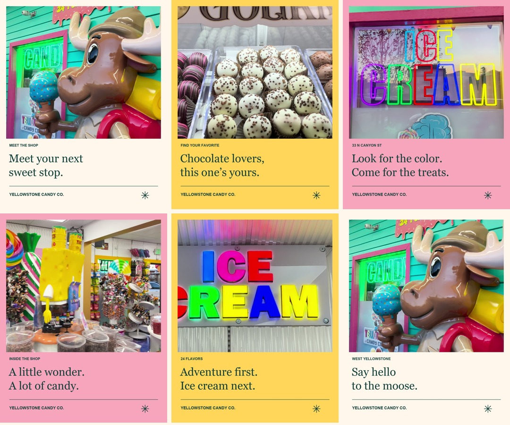

Your shop has personality.
Let's bring it online.
A website and content concept inspired by your colorful storefront, your treats, and the experience of stopping in.
Design, editing, and original footage by Misael.
This is an independent pitch concept, not the official business website or a commissioned client project.

A sweet first impression.
Explore a mobile-friendly website concept built around your shop.
Open website demo ↗
The same personality, everywhere.
A clearer profile and a fresh content direction using real store footage.
Explore the Instagram concept ↗A little look inside.
A short vertical reel concept featuring your chocolate counter, colorful shop, and moose mascot.
Silent pitch preview. Music selection comes with the final content direction.
Download sample reel ↓From a colorful storefront to a clear first impression.
The teal siding, pink trim, neon signs, and moose mascot set the direction. Cream backgrounds and simple typography give the real photos room to stand out.
The mobile layout puts an introduction and directions up front, then leads through the treats and visit information. The Instagram concepts carry the same palette into readable covers and a clearer profile.
The sample reel uses actual store footage, with a product opening, a tasting moment, colorful details, and a location card. It is intentionally silent; music would be selected for the final content.
Status: complimentary pitch concept, awaiting business feedback. Offerings, hours, contact information, and final content would be confirmed with the owner before an official launch.
Have a business idea? Work with me ↗